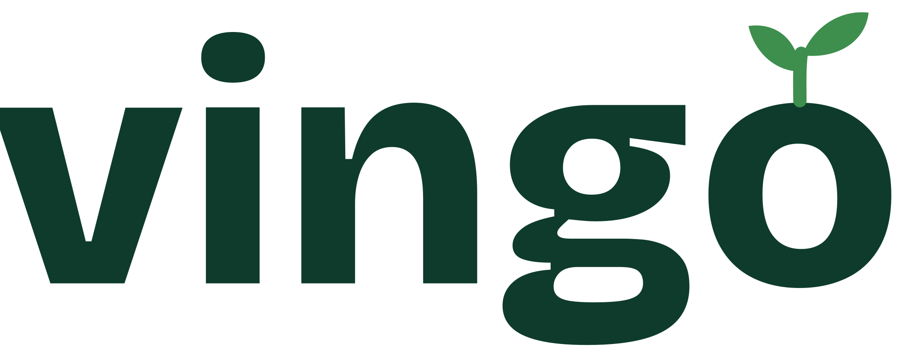
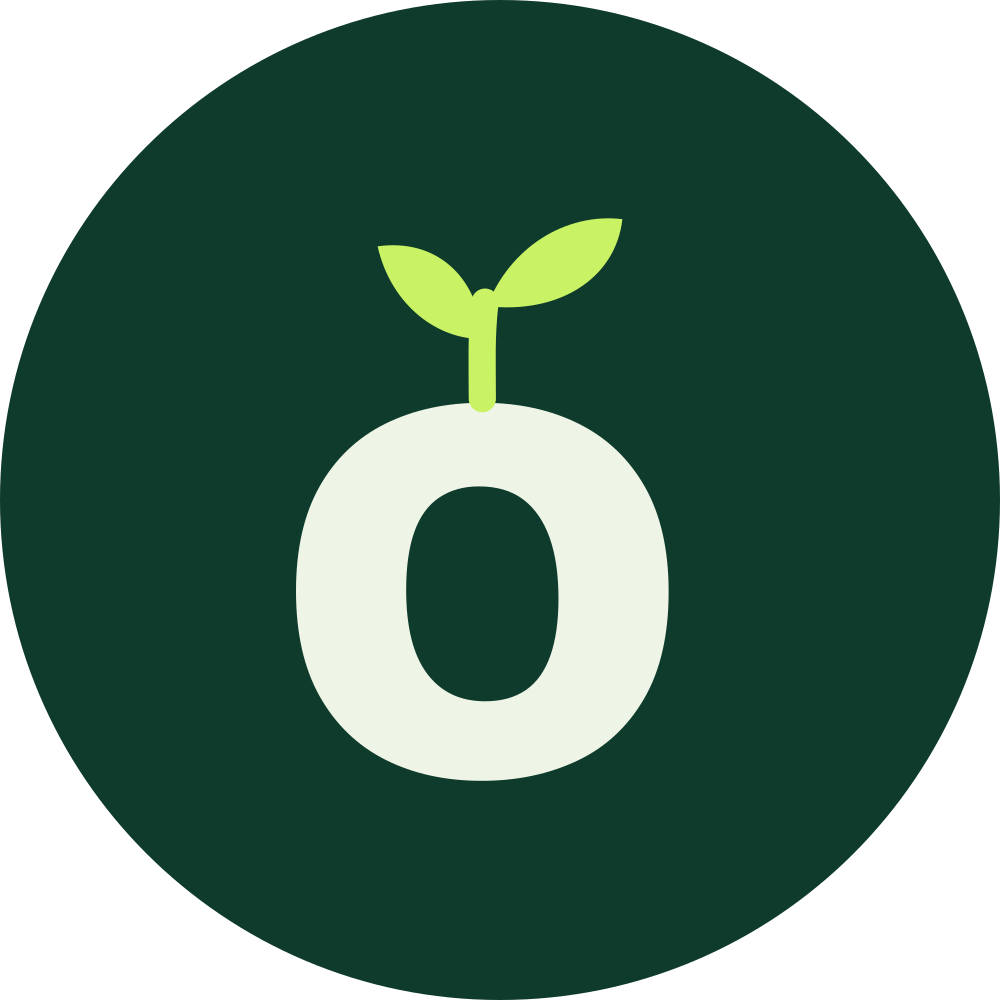

Plantas para quem tem pouco tempo e muita vontade.
A Vingô é uma loja de plantas para apartamento — e-commerce com entrega em São Paulo e uma loja física em Pinheiros. Vende plantas, vasos e kits prontos, sempre com instruções simples de cuidado.
Propósito: fazer qualquer apê virar um cantinho verde, sem culpa e sem planta morta.
Público: pessoas de 25 a 40 anos que moram em apartamento, trabalham muito, adoram a ideia de ter plantas e já perderam algumas pelo caminho.
Personalidade: bem-humorada, acolhedora, prática. Fala como uma amiga que entende de plantas, nunca como um manual técnico.
Promessa: "Se a gente vendeu, a gente te ensina a manter viva."
Wordmark em Bricolage Grotesque ExtraBold, em caixa baixa, com um broto no lugar do acento do "ô". O símbolo (o "ô" com o broto) é usado em avatares, favicon e selos.


Positivo (fundos claros) · Negativo (fundos escuros, broto em verde-broto) · Símbolo. Área de proteção: a altura do "o" em volta de todo o logo. Tamanho mínimo: 80 px de largura.
Proporção de uso:
Regra de contraste: verde Broto nunca como texto sobre fundo claro. Texto sobre fundo claro é sempre Mata.
Bricolage Grotesque, fonte variável. ExtraBold 800 para impacto e para o trecho de destaque; pesos finos (200 a 300) para títulos e números gigantes em peças digitais. Entrelinha apertada e espaçamento levemente negativo.
Ambas gratuitas no Google Fonts. Nunca usar Inter, Arial ou fontes de sistema nas peças da marca.
A Vingô se expressa com ilustrações vetoriais chapadas de folhas (costela-de-adão, jiboia, espada-de-são-jorge), sem contorno, nos tons Mata, Musgo e Broto. Elas podem "crescer" e balançar devagar em peças digitais. O adesivo rosa traz o humor.
Formas com cantos arredondados (raio 14 px em cartões, botões em pílula). Sombras raras e suaves. Nada de gradientes decorativos, bolhas desfocadas ou emojis no lugar de ícones.
Frases curtas. Humor leve, nunca debochado com o cliente. Zero culpa. Termos técnicos só com tradução ao lado.